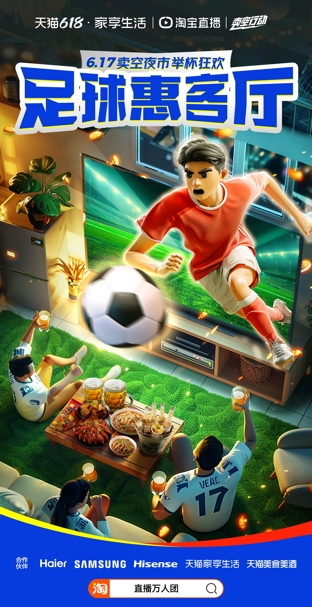
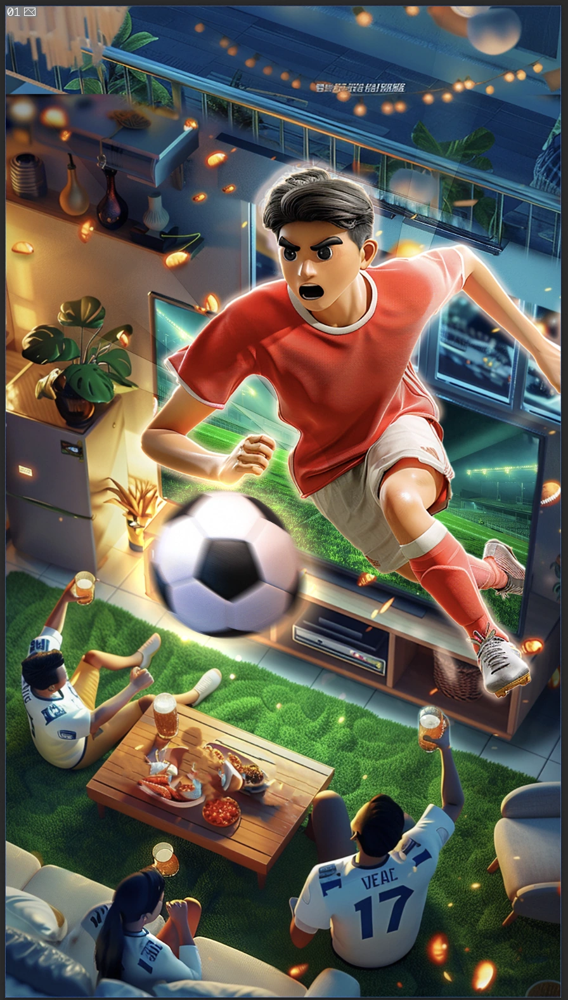
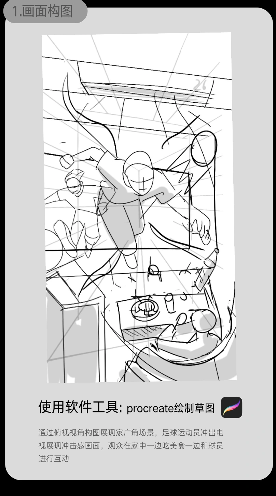
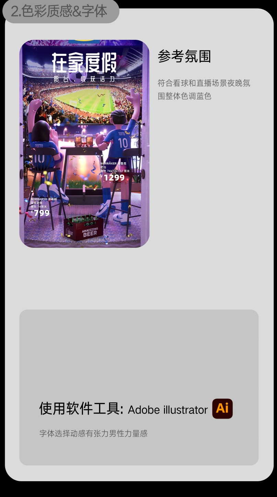
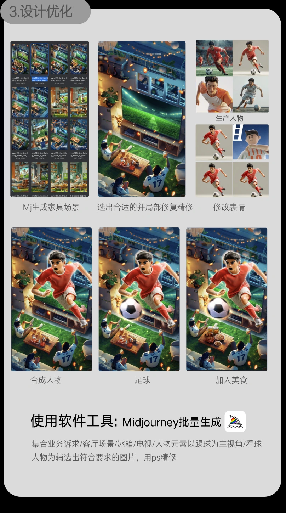
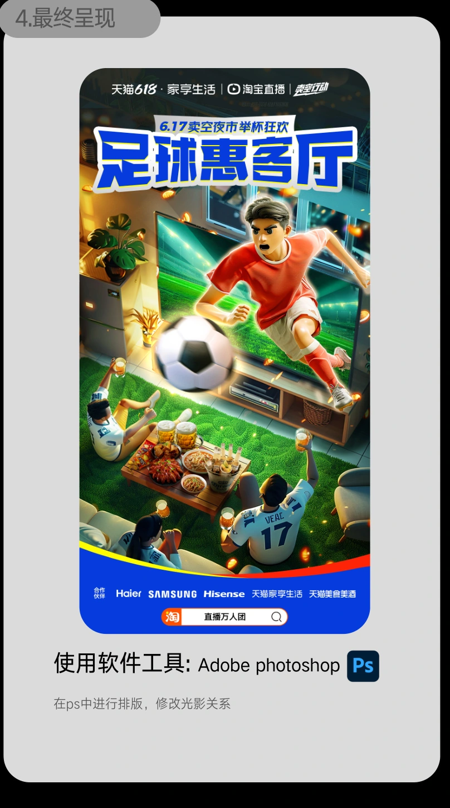

2024 ✦ SELECTED PROJECT
足球惠客厅
MAIN VISUAL把观赛主场搬进客厅 ─╯
#01PROJECT


项目背景
围绕 2024 欧洲杯观赛情境，项目将足球氛围、客厅生活与相关商品组合为活动主视觉。
业务需求
把用户的看球兴趣连接到客厅商品，让赛事主题与家生活在同一画面中被理解。
设计问题
人物、球场与家居并置时，需要协调空间尺度，并为商品和活动标题建立焦点。
创意主张
把主场搬进客厅，让赛事热情进入家生活。
设计范围 · 主视觉深化、场景与人物合成；上游方案单独标注
主视觉 → 观赛任务 → 构图与参考 → 场景与人物 → 合成呈现
COMPOSITION & REFERENCE先明确空间关系与视觉焦点 ─╯
#02PROJECT
原稿中的上游方案与氛围参考用于说明依据，参考图片保持原有身份。
用草图协调人物、球场与客厅尺度

确定场景色彩、质感与标题氛围

SCENE & CHARACTER以合成连接赛事与生活 ─╯
#03PROJECT
围绕构图优化场景与人物动作

合成商品、人物与活动标题

DELIVERY & REVIEW交付与复盘 ─╯
#04PROJECT
交付呈现
最终主视觉、场景画面，以及构图、氛围参考、人物与合成过程。
设计复盘
用构图草图控制空间关系，再处理人物动作与商品位置；参考图与最终作品保持明确区分。